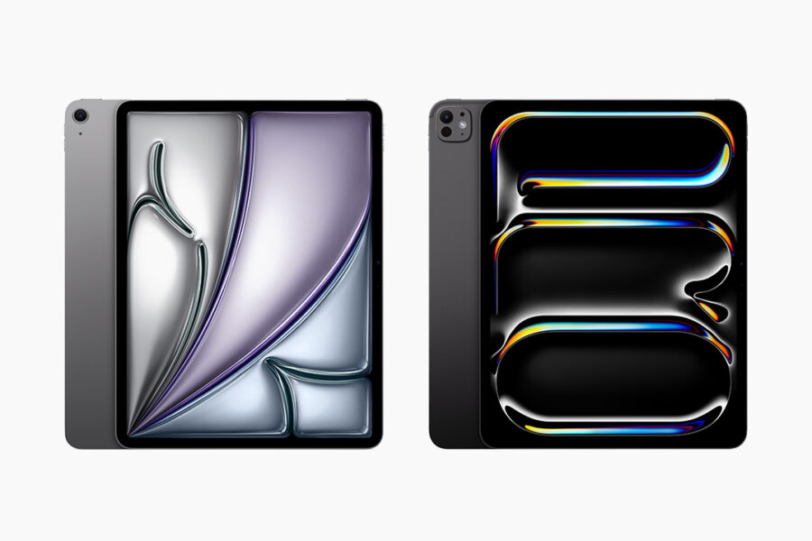

新闻

新 iPad Pro 和 iPad Air
今年的 iPad Air 不好。可是，

澳大利亚
澳大利亚真的应该考虑退出美国养狗俱乐部，变得更加独立。澳大利亚也应该成为共和国。
麒麟9000S：一个非常好的进步
麒麟9000S 只有中国技术。不过，

中国的汽车
中国在做很多汽车。
MacBook Pro
MacBook Pro 现在是很差的选择，因为苹果芯片性能不好。Windows 是更好的选择。